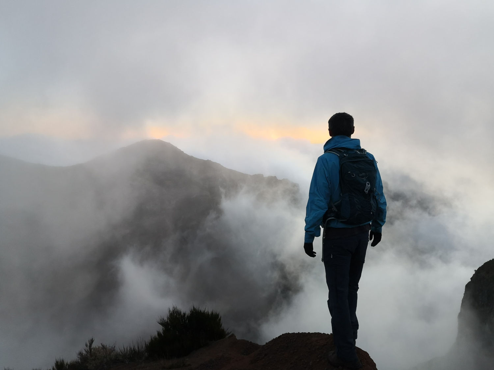

I'm Alexander Åstrand, an aspiring
blockchain developer working my way towards becoming a full stack web 3.0 developer
I'm Alexander Åstrand, an aspiring
blockchain developer working my way towards becoming a full stack web 3.0 developer
I'm currently based in Scandinavia, splitting my time between Copenhagen and Southern
Sweden.
I primarily work remotely but I'm open to taking on projects locally too if they catch
my eye.
Hello!
Studies
I'm studying blockchain development remotely at Medieinstitutet, a two year programme that will give me deep knowledge in both front-end and back-end blockchain development.
Online
I am an avid crypto and DeFi enthusiast and like to get involved with different projects in this
area. I love the idea of a decentralized web and work towards that in every aspect that I can.
I'm a big proponent of sustainability and like to make use of blockchain technologies
to encourage sustainability.
Offline
 When I'm not coding I'm big
fan of the outdoors and love to go hiking, climbing, skiing or going on whichever adventure that
awaits out there.
I'm also a huge sports fan and all sports entice me, but maybe mostly Football. I also
enjoy to read and write, and I might publish a novel at some point in the future.
Other experiences
Before I started my journey into the world of blockchain I was involved in quite a few other
things. I have a master in Sustainable Urban Development and spent a few years in that area.
I've spent some time working in psychiatry. I've also studied business economics and
delved into investing and trading. My goal is to tap in to all these invaluable and widely
different experiences in my work with blockchain.